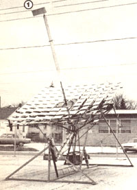
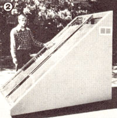
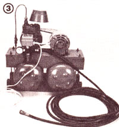
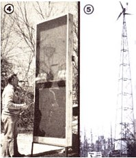
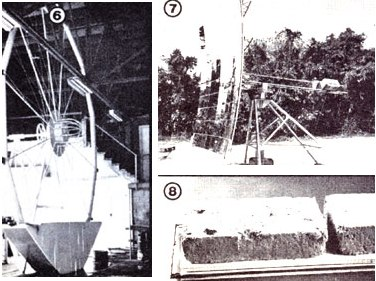

Here are some of the special treats in store for our summer visitors!
Here are just a few of the "goodies" that MOTHER's seminar attendees will get to inspect first hand. If by chance you don't recognize something, it's because we haven't featured it yet! The dispolay will include these projects and more
As you can imagine, everyone here in MOTHER" North Carolina is eager ly anticipating this magazine's first series . seminars, which are due to "kick off'' on July 9, 1979! And-although these pro grams will be chock-full of solid informa tion, advice, and helpful tips-there'll be another opportunity open to our summer guests that's just too good to be missed: the chance to inspect-first-hand-many of the projects that MOTHER's inventive research crew has developed over the past few years . . . including some items that haven't yet appeared in print!
For the first time, much of MOM's alternative energy hardware will be on ''big as life" display . . . including such projects as the Curnutt solar furnace, MOTHER's Minto wheel, the Shuttlebug automobile,
MOTHER's waste-oil heater, the solar food dryer and our low-cost, high-efficiency heat grabber . just to name a few! But that's not all: Working models of our various experimental alcohol stills, prototypes of some exotic solar hardware, and samples of MOTHER's homemade building blocks will also be on exhibit for all to see . . . plus the countless shop projects that have appeared in this magazine over the years.
And there's still more! We know that there are plenty of folks who are eager to learn more about alternative homestead (or urban, or suburban) power sources, but haven't ever had the chance to see an actual installation. Well, we plan to provide that opportunity! There will be two or three different windplants set up at the seminar site (including- possibly-a rebuilt Jacobs unit), and other environmentally oriented energy producers should be under construction (or completed) as well . . . such as a small hydroelectric generator that'll take advantage of the free-water energy that Mother Nature has to offer!
Remember, too, that the seminars will be held right on MOTHER's new property-the land that was purchased largely with the funds made available by thousands of lifetime subscribers who sincerely want to see the "Community of the Future'' work. Architectural models of our proposed Eco-Village-detailed to scale-will also be on display . . . offering everyone an opportunity to see just how gently a community can repose among the hills and valleys of the countryside!
Best of all, these bonuses are-as we've said-in addition to the seminars themselves . . . and you can find out more about those events by turning to page 122 of this issue. We'll see you here!
|
 |
 |
 |
|
 |
 |
|